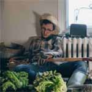
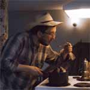
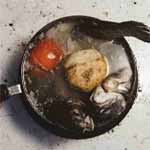
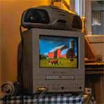
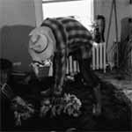
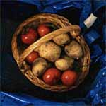
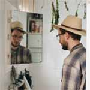

{
"UUID": "e1ce1436-609f-4a31-9af3-33fe38e6466b",
"Title": "The Urban Farmer",
"ShortDescription": "A man farming in his apartment",
"Year": 2019,
"FeaturedWork": "FALSE",
"URL": "the-urban-farmer",
"Modality": [
"Digital"
],
"Medium": [
"Photography"
],
"Tools": [
"Digital camera",
"Lightroom",
"Photoshop"
],
"Object": [
"Digital image"
],
"Collaborators": [
"Tank Buzadi",
"Toby Sherman"
],
"Keywords": [
"Culture",
"Geography",
"Sustainability"
]
}Documenting Tom, a farmer who is set on growing high quality produce from his Toronto apartment.
| * | Title | Size (bytes) | View |
|---|---|---|---|
 | The Urban Farmer | 167,369 | Load image |
 | Tom's Soup I | 128,031 | Load image |
 | Tom's Soup II | 147,140 | Load image |
| Afternoon Rest | 133,585 | Load image | |
 | Full view | 168,147 | Load image |
 | Full view | 135,560 | Load image |
 | Full view | 180,848 | Load image |
| Full view | 171,644 | Load image | |
 | Full view | 112,288 | Load image |